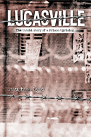

<body bgcolor="#FFFFFF" text="#000000" link="#0000FF" vlink="#CC0000" alink="#CC0000"><center><hr width="350" size="1" align="center" noshade>A textbook case for what is wrong with the death penalty<hr width="350" size="1" align="center" noshade><p><a href="https://cdcshoppingcart.uchicago.edu/Cart/ChicagoBook.aspx?ISBN=9781592130931&&PRESS=temple" target="_top">Buy this book!</a> | <a href="https://cdcshoppingcart.uchicago.edu/Cart/Cart.aspx?PRESS=temple" target="_top">View Cart</a> | <a href="https://cdcshoppingcart.uchicago.edu/Cart/Cart.aspx?PRESS=temple" target="_top">Check Out</a></p><p></p></center><!--none//--><h1>Lucasville</h1>
<H2>The Untold Story of a Prison Uprising</H2>
<h3>Staughton Lynd</h3>
<P>cloth 1-59213-093-3 $54.00, Jun 04, <FONT COLOR=#990033>Out of Print</FONT>
<br>paper 1-59213-094-1 $22.95, Jun 04, <FONT COLOR=#990033>Out of Print</FONT>
<BR> 256 pp
5.5x8.25
3&nbsp;tables 3&nbsp;figures 22&nbsp;halftones
</P><BLOCKQUOTE><I>"Mr. Lynd is a masterful storyteller and he has a hell of a story to tell. [He] has written a definitive history of one of the longest prison riots in U.S. history and its aftermath. That alone is worth the price of admission....What makes the book unique in the historical sense is the remarkable range of primary and secondary sources; Lynd writes with a lawyer's pen but a poet's ear....This book is a reminder that prisoners&#151even death row prisoners&#151are human beings, too. </i>Lucasville<i> is a resounding affirmation of our common humanity."</i>
<br>&#151<b>Michael Mello</b>, author of <i>The Wrong Man: A True Story of Innocence on Death Row</i><i></I></BLOCKQUOTE>
<p>In 1993 prisoners took control of the maximum-security prison in Lucasville, Ohio. Their 11-day ordeal started with a dispute between the warden and Muslim prisoners and ended with a negotiated settlement, but only after nine prisoners and one hostage had been killed. In the months that followed, leaders of the uprising were singled out by the state, tried, and sentenced to death despite compelling evidence of their innocence. <i>Lucasville</i> tells the inside story of the uprising, the subsequent trial and sentencing.
<p>Eminent historian and lawyer Staughton Lynd brings the full power of evidence to bear as he retells the Lucasville story. He argues compellingly that the five men sentenced to death have been unfairly convicted. In addition, he describes the uprising from the inside&#151how the prisoners worked together, black and white, even Muslims and members of the Aryan Brotherhood, for the improvement of conditions.
<p>The ease with which the state has been able to use its resources, and the court's, to bring the Lucasville 5 to the point of execution raises questions that will make readers want to rethink not only the justification for these convictions, but the legitimacy of the death penalty in any case.
<BR>&nbsp;<h2>Excerpt</h2><P>Excerpt available at <a href="http://www.temple.edu/tempress">www.temple.edu/tempress</a></p>
<BR>&nbsp;<h2>Reviews</h2>
<p><i>"They rose above their status as prisoners, and became, for a few days in April 1993, what rebels in Attica had demanded a generation before them: men. As such, they did not betray each other; they did not dishonor each other; they reached beyond their prison 'tribes' to reach commonality."</i>
<br>&#151<b>Mumia Abu-Jamal</b>
<p><i>"There is a temperature at which the welder's torch becomes so hot and burns with such purity that its flame is no longer yellow, orange, or red, but burns blue. Then it is capable of cutting through steel. Staughton Lynd wields the blue flame of truth, cutting through the lies, threats, evasions, and misrepresentations of the authorities of the state of Ohio."</i>
<br>&#151<b>Professor Peter Linebaugh</b>, Department of History, University of Toledo; author of <i>The London Hanged</i> and co-author of <i>The Many-Headed Hydra</i>
<p><i>"</i>Lucasville<i> is one of the most powerful indictments of our 'justice system' I have ever read. What comes across is a litany of flaws deep in the system, and recognizably not unique to Lucasville. The detailed transcripts (yes, oral history!) give great power to the whole story."</i>
<br>&#151<b>Howard Zinn</b>, author of <i>A People's History of the United States</i>
<p><i>"[O]f interest to anyone who follows prison politics or the often enigmatic workings of the justice system."</i>
<br>&#151<b><i>Library Journal</i></b>
<p><i>"Lynd presents a startling, bold case... </i>Lucasville<i> is a compelling account of an historic prison rebellion and an appalling miscarriage of justice. It deserves the widest possible readership."</i>
<br>&#151<b><i>Against the Current</i></b>
<p><i>"The argument for amnesty offered here is convincing."</i>
<br>&#150<b><i>Rain Taxi</i></b>
<p><i>"Mr. Lynd relates in a detailed event chronology how the uprising started and spread. He also examines in great detail the farce of the post-riot trials. ...Given the bias and flaws in the trials, Mr. Lynd speaks strongly in favor of an amnesty, citing the amnesty following the infamous riot at Attica."</i>
<br>&#151<b><i>Prison Legal News</i></b>
<p><i>"Lynd has researched his case quite thoroughly, and readers will be convinced that the Ohio prison system stinks to high heaven."</i>
<br>&#151<b><i>Ohioana Quarterly</i></b>
<p><i>"Lynd expertly applies past examples and inmate testimonies to make his case.... Those who share Lynd's political outlook will no doubt, find this book worth exploring."</i>
<br>&#151<b><i>Contemporary Sociology</i></b>
<p><i>"[T]his is a very worthy study because it raises significant questions, not just about SOCF [Southern Ohio Correctional Facility] but also about the American prison system as a whole."</i>
<br>&#151<b><i>The Historian</i></b>
<BR>&nbsp;<P><p><a href="../authors/1772_letter.html">Open letter to the Reader</a> from Staughton Lynd, 29 June 2004.
<p>Read "<a href="http://www.counterpunch.org/linebaugh08052004.html" target="new">Doing Time for Political Crime</a>," an essay by Peter Linebaugh in <I>Counterpunch</I>.</P><BR>&nbsp;<br>
<h2>Contents</h2><P>
<p>Introduction
<br>1. A Long Train of Abuses
<br>2. The Worst of the Worst
<br>3. Who Killed Officer Vallandingham?
<br>4. Settlement of a Siege
<br>5. The Criminal Injustice System: Before Trial
<br>6. The Criminal Injustice System: Trial and Appeal
<br>7. Overcoming Racism: the Lucasville Redemption
<br>8. Attica and Amnesty
<br>Chronology
<br>Appendix A. Transcript of Tunnel Tape 61
<br>Appendix B. Demands of the Prisoners in L Block
<br>Appendix C. Documents Circulated by Advocates of the Death Penalty for Lucasville Rioters
<br>Appendix D. "Petition for Justice and A Moratorium on all Executions in Ohio"
<br>Notes
<br>Index
</P><BR>&nbsp;<H2>About the Author(s)</H2>
<table><tr><td valign="top"><img src="/tempress/authors/1772_au.gif" height="90" width="75"></td><td width="100%" valign="middle"><p><b>Staughton Lynd</b> has been a scholar-activist all his adult life. The director of the Freedom Schools in the 1964 Mississippi Summer Project, he also is the author of a number of books, including <i>Intellectual Origins of American Radicalism</i> and <i>Living Inside Our Hope: A Steadfast Radical's Thoughts on Rebuilding the Movement</i>. His most recent book is <i>The New Rank and File</i>, edited with Alice Lynd.</P></td></tr></table>
<BR><H2>Subject Categories</H2>
<p><A HREF="/tempress/general.html" TARGET="_top">General Interest</a>
<BR><A HREF="/tempress/law.html" TARGET="_top">Law and Criminology</a>
<BR><A HREF="/tempress/american.html" TARGET="_top">American Studies</a>
</p>
<p align="center"><a href="https://cdcshoppingcart.uchicago.edu/Cart/ChicagoBook.aspx?ISBN=9781592130931&&PRESS=temple" target="_top">Buy this book!</a> | <a href="https://cdcshoppingcart.uchicago.edu/Cart/Cart.aspx?PRESS=temple" target="_top">View Cart</a> | <a href="https://cdcshoppingcart.uchicago.edu/Cart/Cart.aspx?PRESS=temple" target="_top">Check Out</a></p><p><font face="Arial" size="1"><a href="copyright.html" onMouseOver="window.status='Web Copyright Policy';return true;" onMouseOut="window.status=''" title="Web Copyright Policy">&copy;</a> 2015 <a href="http://www.temple.edu" target="new" onMouseOver="window.status='Link to Temple University home page';return true;" onMouseOut="window.status=''" title="Link to Temple University home page">Temple University</a>. All Rights Reserved. http://www.temple.edu/tempress/titles/1772_reg.html</font></p>